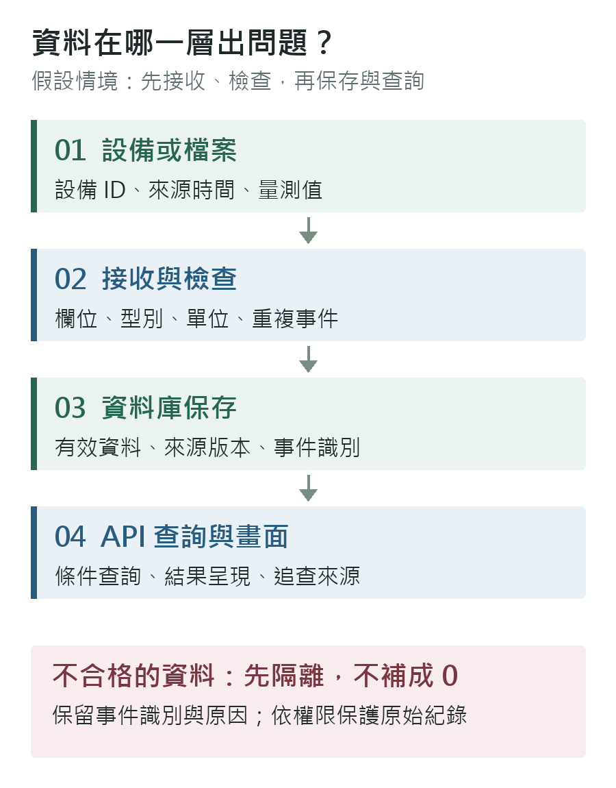

先看這一段
不必臨時重做整份簡報
對方在邀請中表示會介紹公司與職務；現場填表，不用另外準備紙本履歷，歡迎呈現作品。未指定正式簡報時長，也未提到筆試，不能據此保證完全沒有技術提問。
- 練熟 60–90 秒自介：資工與通訊背景、論文系統、為什麼想做技術與需求之間的工作。
- 作品只講一個：論文系統，先用 3 分鐘說問題、取捨、驗證；被問細節再開圖。
- 確認這份 PM 的實際內容：是否做需求與交付？有無個人業績？新人由誰帶？
事實與判斷分開
他們做什麼，你要確認什麼
- 官網資訊
- 服務涵蓋企業網路、資料中心及資安建置，不是只賣單一軟體。公司官網
- 職缺內容
- 協助專案落地與市場研究；接受無工作經驗者。公司刊登有新人培訓與導師安排，實際帶領方式仍要問清楚。104 公司刊登的產品 PM
- 目前薪資
- 公開刊登為月薪 40,000 元以上，並非已向你報價。年終列為福利，但保證月數未確認。
- 合理推論
- 可能需要連接客戶需求、產品方案、工程與商務。不能因為職稱叫 PM，就假設有自有軟體的產品決策權或一定做 AI。
- 第一個問題
- 「這個職位比較偏產品規劃、客戶專案交付，還是產品推廣？新人主要會負責哪一段？」
今天不是要證明你已是資深 PM，而是讓對方看見：你能理解技術、釐清問題、整理依據，也願意學習客戶與商業面的判斷。
先讓對方認識你
自然地介紹自己
30 秒版本
您好，我是謝向嶸，大學讀勤益科大資訊工程系，碩士畢業於國立臺灣海洋大學通訊與導航工程學系。我的論文是用 Python、資料庫和 API 建立海洋資料品質監測系統。我對把需求整理清楚、跟技術端確認可行性，再把成果做出來的工作很有興趣，所以想了解貴公司產品 PM 的培養方式。
60–90 秒版本
您好，我是謝向嶸，大學就讀勤益科大資訊工程系，碩士畢業於國立臺灣海洋大學通訊與導航工程學系。
我的碩士研究是海洋資料品質監測系統。資料有不同格式、時間和位置，我需要先釐清怎麼比較才有意義，再用 Python 處理，透過 PostgreSQL 和 API 保存、查詢，最後在 QGIS 呈現。我也會回頭檢查結果，避免只是畫面有出來，就當作正確。
做這個專案時，我發現自己除了實作，也很喜歡把問題拆開、整理資料和說明結果。這也是我想了解 PM 工作的原因。我目前還沒有企業端的專案管理經驗，但有技術背景，也常用 AI 協助讀文件、整理比較和除錯，重要內容仍會查原始資料。
我想從小範圍的需求整理、進度追蹤和方案比較開始，逐步熟悉客戶與交付流程。今天也希望了解這個 PM 職位實際負責的產品，以及新人前三個月會怎麼安排。
作品不是技術名詞清單
論文改用 PM 聽得懂的順序
開場先問：「我有準備一個研究系統的作品，可以用三分鐘說明嗎？」不必直接開始完整口試報告。
- 01問題｜30 秒不同時間、位置、格式的資料，如何比較、保存，並回查被標示的原因？
- 02範圍與方案｜60 秒不是開發預報模型，而是品質監測。Python 計算；成果包保存完整場，資料庫保存摘要與關注點位；API 接 QGIS。
- 03判斷與取捨｜45 秒水位資料的基準不一定相同，因此保留有號比較與限制，不把所有差值都叫預報錯誤。
- 04驗證與交付｜45 秒42 個目標日、114 組資料重算核對一致，並加入 11 個浮標外部比對。這是研究範圍內的檢查，不等於商用效能保證。
這項研究讓我學到，先把需求和資料定義講清楚，後面的實作與驗收才不會各說各話。如果放到 PM 工作，我希望把這個習慣用在需求確認、風險紀錄和交付檢查。不過客戶談判、預算和企業專案排程是我還需要學習的部分。
只展示自己講得清楚的架構與結果；不用把 RAG 小作品當成今天的主軸，也不要臨時加上自己沒有做過的多人管理或成本節省數字。
準備情境，不是已知考題
可能被問，怎麼回答
本次未找到足以確認「同職缺、同主管」題目的公開面經。以下依工作內容設計，不是公司題庫。
為什麼從資工背景想做 PM？
我不是因為不想碰技術才找 PM，而是發現自己對釐清問題、比較方案、整理成果也有興趣。技術背景能幫助我理解工程端的限制，但我知道 PM 還要顧客戶、時程、成本和協作。我想從有人帶領的初階工作開始，而不是一進來就假設自己能獨立帶大型專案。
不要說「寫程式贏不了 AI，所以轉 PM」。PM 同樣要查證、判斷與負責。
沒有 PM 經驗，你能帶來什麼？
我可以先協助把需求整理成可確認的項目、比較技術文件、追蹤待解問題，並跟工程師確認驗收方式。我的研究有資料處理和驗證經驗，但不能直接當作企業 PM 年資。客戶溝通和專案流程，我希望依團隊的方法學習，先把一小段工作可靠地完成。
客戶說「系統很慢」，你先做什麼？
- 確認誰受影響、哪個功能、何時開始、影響營運到什麼程度。
- 把「很慢」改成可量測條件：一般／尖峰人數、回應時間、錯誤率；目標要與客戶和工程端確認。
- 收集時間點及請求識別，讓工程端分別看網路、API、資料庫與近期變更。
- 討論改善選項、成本、停機風險與回復方案；不要先承諾購買設備就能解決。
- 用相同條件比較改善前後，讓客戶確認是否達到驗收標準。
我會先把問題定義清楚，再與工程師確認原因和可行方案。p50、p90 可以幫助描述延遲分布，但不能單靠它們判定資料為什麼不見。
客戶臨時加需求，工程師說做不完？
先問這個需求解決什麼問題、是否影響原本上線目標，再請工程端評估工作量、相依項目和風險。我會整理三種選項：延期完成全部、維持日期縮小範圍，或拆成兩階段。把影響寫清楚，請有決策權的人確認，不自行向客戶保證，也不直接要求工程師加班。
怎麼做市場或競品分析？
先定義目標客戶和使用情境，再挑能解決相同問題的方案。比較功能、相容性、授權與維運成本、導入時間、支援條件和限制，資料要有來源與日期。最後不是只列規格，而是說明哪個方案適合哪種客戶，以及哪些關鍵資料還要向原廠確認。
AI 可以先整理表格；報價、產品能力、授權限制不能只靠 AI 回答。
你會怎麼把 AI 用在 PM 工作？
我會用它協助把會議紀錄整理成需求、待辦、負責人和期限，也可整理產品文件或列出需求矛盾。整理後會回查原文，再交給相關人確認。客戶個資、合約和未公開報價不直接上傳外部模型；涉及對外承諾、報價或驗收，我不會讓 AI 自動決定。
API 少了一個欄位，你怎麼處理？
先確認是整個請求沒有回來，還是 HTTP 成功但某個欄位缺失，再對照 API 規格、原始回應與伺服器紀錄。必填欄位缺失應標記失敗並保留追查線索；選填欄位依規格處理。暫時性錯誤才考慮有限次重試，寫入操作還要避免重複執行。不能先加延遲或補成 0，把錯誤藏起來。

遇到不懂的網路或資安產品，怎麼開始？
我會先了解它保護或改善哪一個環節、客戶目前遇到什麼問題，再讀原廠概覽與部署條件，請教工程同仁。先畫出資料怎麼走、產品放在哪裡、誰維護，整理三到五個不確定問題再討論。我有通訊相關背景，但沒有企業網路設備部署經驗，不會直接承諾自己已熟悉。
談一個挫折或需要修正的判斷
選真實事件，用「原本以為什麼 → 發現哪裡不對 → 怎麼確認與修正 → 後來怎麼避免」回答。可以使用論文的基準定義或資料驗證案例，但不要杜撰客戶衝突、團隊人數或改善百分比。
我的研究需要比較不同來源資料，但數值能相減，不代表定義真的一致。我後來更重視先確認單位、時間與基準，並把結果能解讀到哪裡寫清楚。這讓我理解，遇到定義不清的需求，應先確認再做，不能只求趕快完成。
網路與資安，只先記住用途
- 交換器
- 讓區域網路中的設備互相連接；進階設備也可能有路由功能。
- 路由器
- 將流量送往不同網路。
- 防火牆
- 依規則限制允許通過的網路流量。
- WAF
- 檢查網站／Web API 的 HTTP 請求，處理應用層攻擊風險；不是所有資安問題的解法。
- 負載平衡
- 把請求分配到多台服務，配合健康檢查避開故障節點；不會自動修復資料邏輯錯誤。
概念參考：Cisco 網路設備說明、Cloudflare 應用服務。不是要求今天就背產品型號。
你的選擇也重要
今天至少問這五件事
- 實際工作：「可以用一個最近的案子，說明 PM 從開始到結案各負責什麼嗎？」
- 工作比例：「需求分析、專案追蹤、市場分析、產品推廣，各大約占多少？會有個人業績或陌生開發指標嗎？」
- 新人帶領：「前三個月由誰帶？會交付什麼成果？多久能參與客戶需求與方案討論？」
- 工作界線：「需要出差、夜間切換系統或假日待命嗎？PM 和工程師怎麼分工？」
- 固定待遇：「核薪區間、保證年終月數、變動獎金，以及試用期後的評估方式分別是什麼？」
被問期望薪資時
我目前期望固定月薪約 56,000 元，也會一起看新人培訓、工作範圍和保證年終。想先了解公司對這個職位的固定薪資預算，以及獎金怎麼計算，再討論雙方能否配合。
56,000 元是依你先前設定的期望，不是市場保證行情，也不是公司已核定的待遇。對方若只談平均月薪，要拆開固定薪、保證年終和不保證獎金。
例：固定 48,000 × 保證 14 個月 = 年保證 672,000 元；除以 12 雖為 56,000 元，但每月固定入帳仍是 48,000 元。須確認年終條件、首年按比例及書面內容。
什麼情況值得繼續談？
- 能參與需求、方案比較、驗收與客戶溝通，不只整理表單。
- 有具體帶領人、前三個月任務和半年後評估節點。
- 薪資與工時清楚，培訓不是沒有期限的口頭承諾。
- 若主要工作是銷售或行政，先確認自己是否願意，不因 PM 職稱直接答應。
今天不必當場承諾入職，先取得完整工作與待遇資訊。
面談後留下具體答案
尚無紀錄
依據與限制
查核日期：2026-09-08。時間與到場安排已對照當日 Google Calendar 與留存的 8/27–8/29 公司邀請；未公開私人對話原文、帳號、電話或郵件連結。尚未重新登入 104 查詢是否有臨時變更，出發前仍應看最新通知。
公司業務依官網；職缺條件依公司自行刊登的 104 頁面。直接職缺頁本次未能由搜尋工具讀取，故以公司頁的同名「產品 PM」段落核對。自介、題目、回答與準備時長是建議，非公司公布題庫。未進行完整勞動違規、司法或財務盡職調查，不據此宣稱公司無風險。
博鉅官網 · 104 公司職缺 · 本次產品 PM 職缺